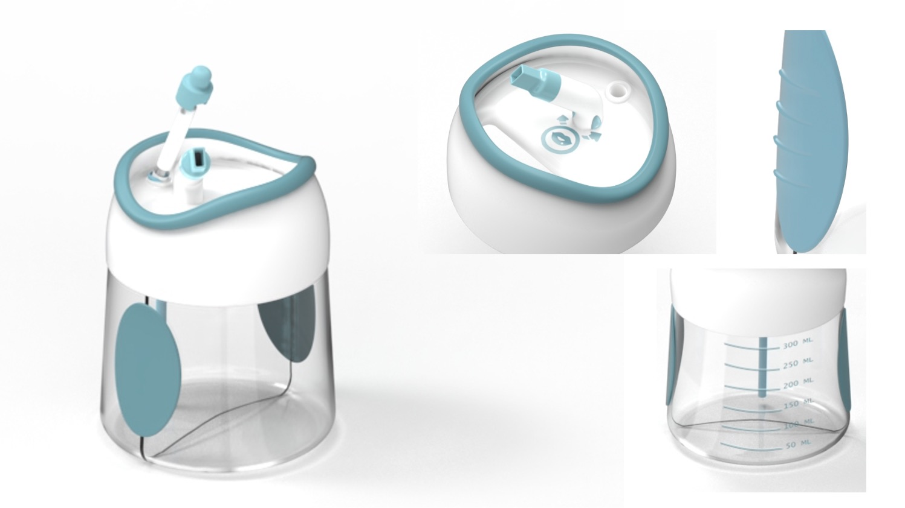
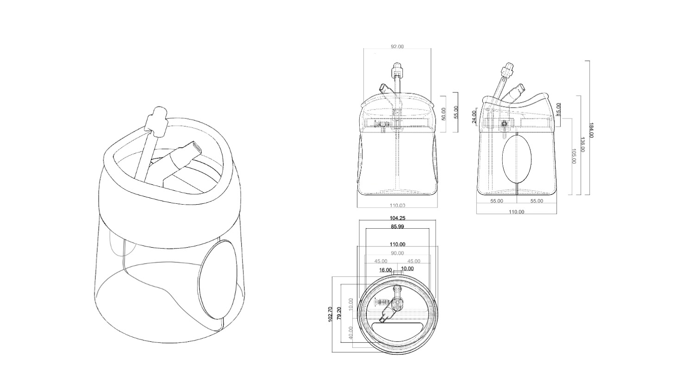

B-easy,prouct design,groupwork,2021
B easy洗鼻器针对儿童洗鼻存在的问题——不适的呛水感，采用了头部姿势矫正和嘴部吹气出水的方法来提高洗鼻的安全性。B easy洗鼻器也突破了传统洗鼻器的使用环境限制，采用盐水盒与废水盒一体结构，借助平时等茶几、桌子即可使用。
B Easy nasal rinsing device aims at the problem the uncomfortable choking feeling, and adopts the method of head posture correction and mouth blowing water to improve the safety of nasal rinsing. B EASY nasal wash device also breaks through the environmental restrictions of traditional nasal wash device. It adopts the structure of salt water box and waste water box, and can be used on tables at ordinary times.
 